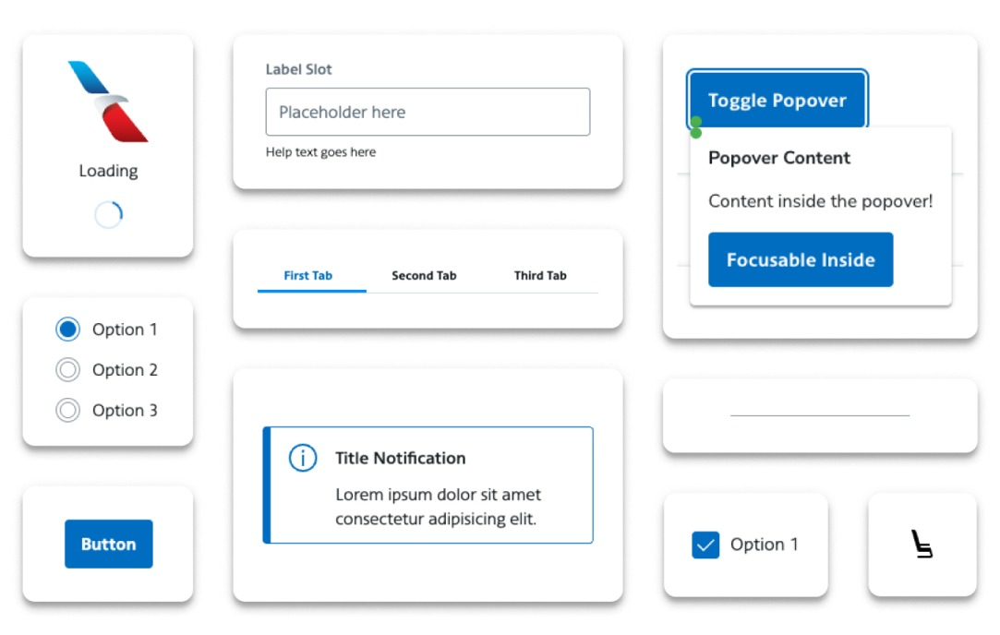
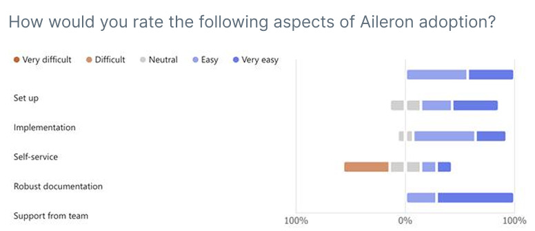
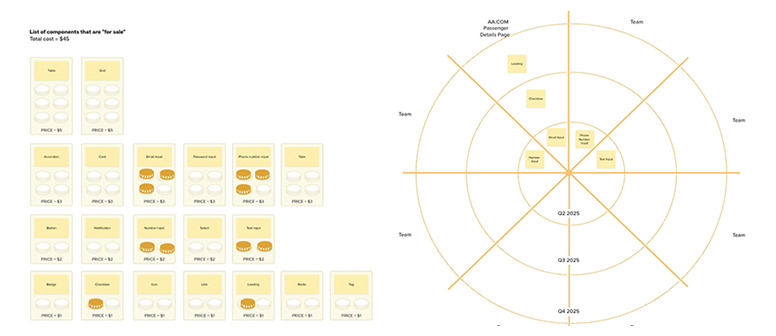
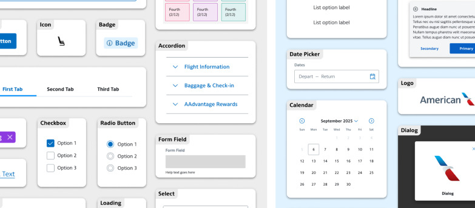
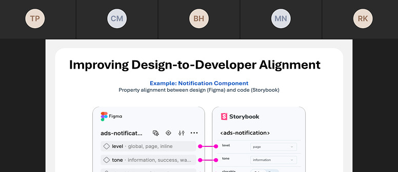
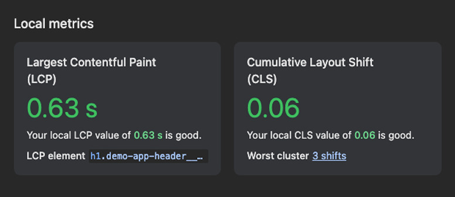
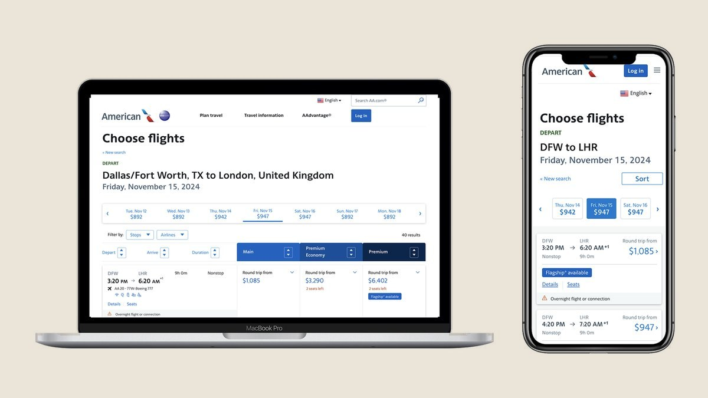
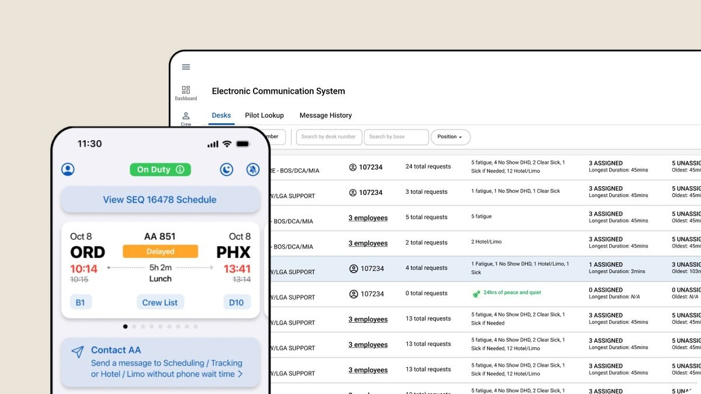
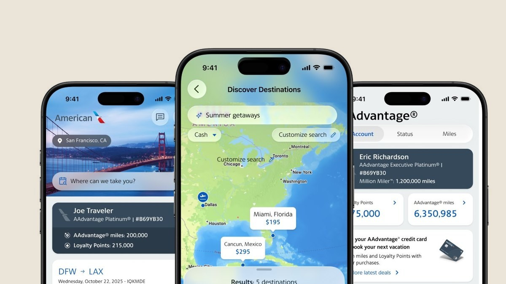

A reusable design system now reaching 66% of the customer-facing development community across Commercial teams.

Overview
The Aileron design system is American Airlines' in-house system, and I own its vision and strategy directly, given its reach, with hundreds of designers and thousands of engineers depending on it across Commercial teams. In 2024, I led a front-end audit with Commercial Technology leadership that surfaced a real problem. Existing components weren't compatible with the frameworks engineering teams actually used, creating visual and functional inconsistency across aa.com rather than preventing it. I made the call to rebuild the system around a native framework approach, matching the technology engineers already worked in, a strategic bet that adoption would follow only if the system stopped asking engineering to accommodate design and started meeting engineering where it already was.
Objectives
Discover and Define
I led a competitive analysis and audit of the current state, in partnership with Commercial Technology governance and architects, surfacing why existing components weren't being adopted. Working closely with my Design Ops manager, I defined the vision and strategy, prioritizing Angular as the framework since it served the majority of Commercial applications, the highest-leverage choice given limited build capacity. From there, the team took the effort forward. A developer experience survey revealed a steep learning curve with the prior system's components and a clear need for better documentation and self-service adoption, findings that directly shaped what came next. Design thinking sessions with the Aileron design system product team prioritized which components would deliver the most value at launch, weighing business impact, ease of use and team needs against each other rather than building everything at once.


Design and Deliver
I directed the build of 29 reusable Angular components, paired with an updated Figma design kit built to match, closing the gap between what designers specified and what engineers could implement without translation loss. I drove adoption beyond the initial build through direct outreach, bringing the Aileron design system into the right technical forums, making the case for its strategic value and walking teams through Angular compliance. Partnering with Commercial Technology, the team validated accessibility, performance and cross-browser behavior before other teams adopted components at scale, staying personally involved through implementation to give teams direct guidance as they integrated the system into their own work.



Outcomes
Vision, strategy and build led by Becky Sherman, in partnership with her Design Ops manager and the Aileron design system product team.
More results

Booking engine redesign

ECS communication system
